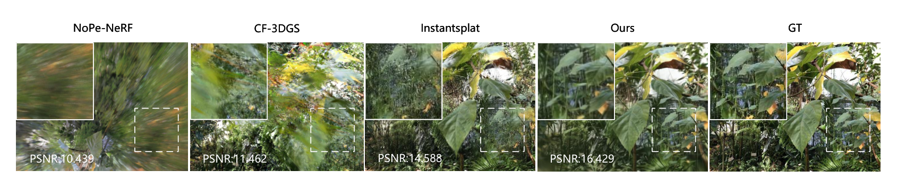
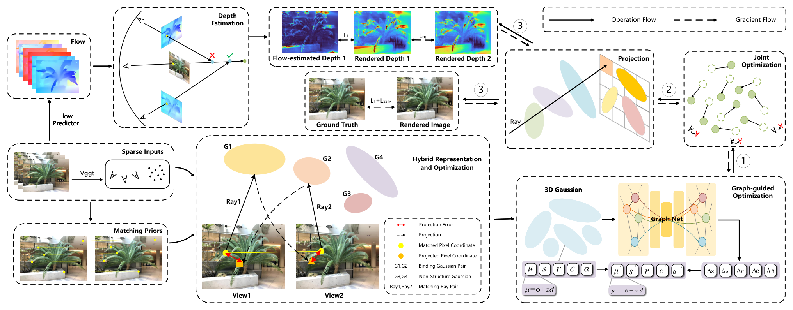
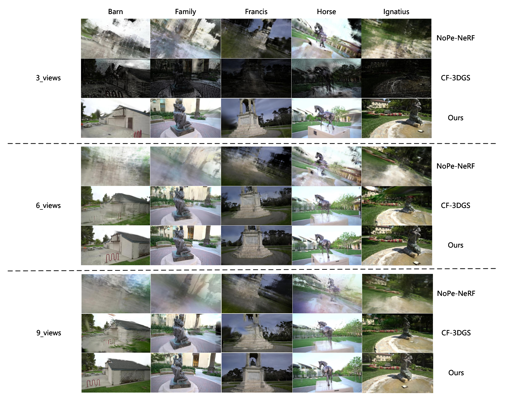
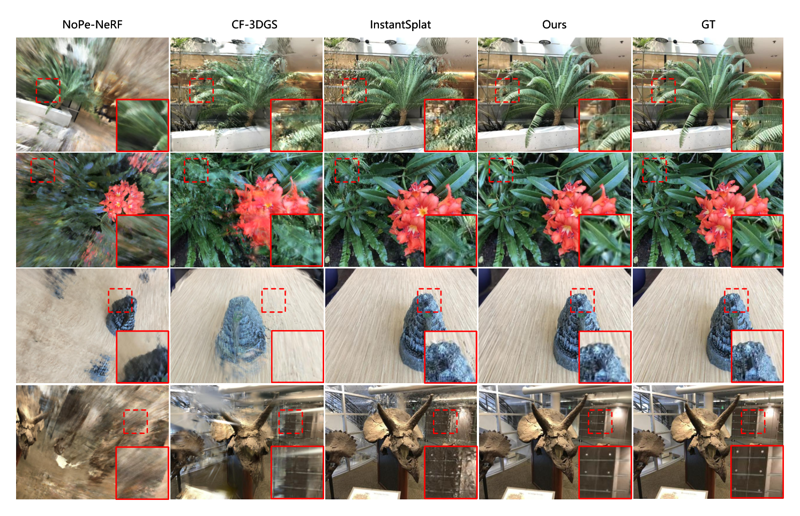
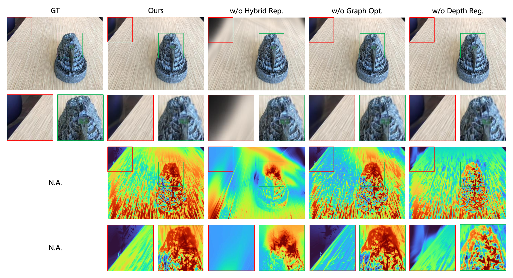

华南理工大学团队提出的 pose-free 稀疏视角重建框架:用 VGGT 基础模型替代 COLMAP 提供稠密点云与初始位姿,以混合高斯表示(ray-based 高斯绑定匹配射线约束位置 + 普通高斯补非重叠区)、图引导属性细化(KNN 图 + GNN 预测属性残差,仅训练末期 200 步启用)与光流-对极几何深度正则三件套增强几何一致性。LLFF 3 视角 PSNR 18.869(InstantSplat 16.726,+12.8%),Tanks & Temples 6 视角 PSNR 21.867(NoPe-NeRF 12.442,+75.7%)。代码未开源,工程细节章可信度降级标注。
Gesplat 解决的是"位姿未知 + 视角稀疏"双重恶劣条件下的 3D 重建与新视角合成问题。传统 NeRF/3DGS 依赖 COLMAP 提供的精确相机位姿与稠密视角覆盖,而稀疏视角(3~9 张)下 SfM 经常直接失败。Gesplat 的做法是:用 VGGT 基础模型(前馈式,替代 DUSt3R/COLMAP)从 3~9 张无位姿图像直接产出稠密点云与相机位姿作为初始化;然后在其上构建混合高斯表示——匹配射线上的高斯位置被参数化为射线参数 $\mu'=o+zd$ 并受跨视角投影一致性约束,普通高斯负责单视角可见区域;再以 GNN 图优化在高斯近邻图上预测属性残差做细节"抛光";并用光流 + 对极几何显式三角化得到的深度做 L1 正则。最终高斯参数与相机位姿联合优化。在 LLFF 与 Tanks & Temples 上全面超越 NoPe-NeRF、CF-3DGS、InstantSplat 三个 pose-free 基线。
一句话核心贡献:把 InstantSplat 的"DUSt3R 初始化 + 联合优化"框架升级为"VGGT 初始化 + 匹配射线约束的位置参数化 + GNN 属性抛光 + 光流深度正则",用几何先验(匹配射线、对极约束)替代容易失真的单目深度先验,在 pose-free 稀疏视角设定下把 LLFF 3 视角 PSNR 从 16.726 推到 18.869(+2.143 dB / +12.8%)。

发表信息核实:arXiv abs 页 comments 与 journal-ref 字段均为空(2025-10-23 核实),按本库规范不挂会议/期刊 badge。注意 arXiv HTML 版页眉标注 "Journal: Pattern Recognition",说明稿件投向或已被该刊接收,但因无法从 abs 页核实,此处仅作记录、⚠️【待核实】正式发表状态以期刊页面为准。v1 提交于 2025-10-11,v2 修订于 2025-10-27。
开源状态:截至 2025-10-23,未找到官方开源实现(codeofpaper.com 标注 "No confident code implementation found",论文也未给出仓库链接)。因此本笔记「⚙️ 工程实现细节」章节全部超参只能照引论文 §3.3/§3.6/§4.1.3,可信度低于有源码佐证的笔记,凡论文未报告的量一律标【待核实】,不做猜测。
NeRF/3DGS 把"精确相机位姿 + 稠密视角覆盖"当作输入前提。稀疏视角下视角重叠少,SfM(COLMAP)的特征匹配与三角化直接失败或产出不可靠位姿(论文 §1: "with limited viewpoint overlap, SfM pipelines such as COLMAP often fail to produce reliable camera parameters"),后续重建无从谈起。
NoPe-NeRF、CF-3DGS 等端到端联合优化场景表示与位姿,但(论文 §1)通常假设 dense video-level coverage(近似连续视频帧),且计算成本高;NoPe-NeRF 用 MLP 优先学全局结构,抑制漂浮伪影的代价是过度模糊与长训练时间;CF-3DGS 复杂的局部-全局优化过程会丢失细节(§4.2.1)。
InstantSplat 用 DUSt3R 做稠密初始化,但 DUSt3R 基于图像对 + 全局对齐,论文批评其"often trades geometric accuracy for consistency under sparse inputs"(§1),且 §4.2.1 指出其会"occasionally generate inexistent details"(生成不存在的细节),降低重建质量。其迭代式后优化也带来了高计算成本(§3.1.2)。
输入监督不足导致场景几何不一致,而高斯属性(位置/形状/颜色/不透明度)高度耦合,优化被迫在"修位置"与"修形状"之间折衷(§1: "the high interdependence among Gaussian attributes forces the optimization to make a trade-off between optimizing shape and position")。
已有工作(DNGaussian、FSGS 等)引入单目深度做正则,但(§1)"handcrafted constraints often suffer from scale inaccuracy and multi-view inconsistency",深度尺度不准 + 跨视角不一致反而会拉低最终渲染质量。
部分优化型稀疏 3DGS 方法在稀疏视角下引入"invalid geometric priors",导致错误拓扑与尺度歧义(§1)。
核心洞察:稀疏视角 pose-free 重建的瓶颈不是"优化器不够好",而是初始化几何与跨视角约束的质量。VGGT 类前馈几何基础模型在稀疏低重叠输入下仍能提供高保真稠密点云与可靠位姿(融合卷积归纳偏置与自注意力,兼具细节保持与全局一致性,§1),因此可以替换整条 SfM/DUSt3R 初始化链;而在优化阶段,应当用显式几何关系(匹配射线参数化、对极约束三角化深度)而非黑盒统计先验来约束高斯,再用 GNN 在近邻图结构上对属性做细粒度修正。
关键假设及失效条件:本文的全部几何约束都建立在"输入图像对之间存在可匹配的重叠区域"之上。作者在 §5 Conclusion 中自己承认:当视角间基本不重叠(largely non-overlapping views)时匹配先验失效,这是方法的明确边界,未来工作需要针对极端稀疏场景设计更鲁棒的几何约束。
| 符号 | 含义 | 形状/维度 |
|---|---|---|
| $\mu$ | 普通 3D 高斯中心位置 | $\mathbb{R}^3$ |
| $\mu'=o+zd$ | ray-based 高斯中心:相机光心 $o$ + 可学习深度 $z$ × 单位射线方向 $d$ | $o,d\in\mathbb{R}^3$, $z\in\mathbb{R}$(可学习) |
| $\Sigma=RSS^TR^T$ | 协方差矩阵,由旋转 $R$ 与缩放 $S$ 构成 | $\mathbb{R}^{3\times3}$ |
| $r,s,c,\alpha$ | 四元数旋转、缩放、SH 颜色、不透明度 | $r\in\mathbb{R}^4$, $s\in\mathbb{R}^3$, $\alpha\in[0,1)$ |
| $K_i,[R_i,t_i]$ | 视角 $i$ 的相机内参、外参(VGGT 初始化,联合优化中可更新) | $K\in\mathbb{R}^{3\times3}$, $R\in\mathbb{R}^{3\times3}$, $t\in\mathbb{R}^3$ |
| $\{r_i^k,r_j^k\}$ | 视角 $i,j$ 间第 $k$ 对匹配射线(GIM 匹配点反投影得到) | 共 $N$ 对 |
| $p_i,p_j$ | 匹配像素点;$\pi(\cdot)$ 为透视投影 $[x/z,y/z]^T$ | $\mathbb{R}^2$ |
| $F^{i\to j}$ | 视角 $i\to j$ 的基础矩阵,决定极线 $ax+by+c=0$ | $\mathbb{R}^{3\times3}$ |
| $\mathcal{G}=(\mathcal{V},\mathcal{E})$ | 高斯图:顶点 = 高斯属性集合 $\{z,s,r,c,\alpha\}$,边 = KNN + 半径 $r$ 阈值截断 | $M$ 个顶点 |
| $\Delta z,\Delta s,\Delta r,\Delta c,\Delta\alpha$ | GNN 输出的属性残差,按 $\lambda_\cdot$ 加权加回原属性 | 与各属性同形 |
| $D$, $\widehat{D}$ | 渲染深度图 / 光流-对极三角化估计的深度图 | $H\times W$ |

设计逻辑串讲:四个组件针对四个不同失效环节——① VGGT 初始化解决"没有可靠起点";② 混合表示 + 双重优化解决"稀疏监督下位置/形状耦合 trade-off"(位置被绑到匹配射线上,自由度从 3 降到 1,且跨视角投影误差直接钉住它);③ GNN 图优化解决"逐高斯独立优化看不到邻域结构",用局部几何上下文做细节抛光;④ 光流-对极深度解决"单目深度尺度不准、跨视角不一致"。
该模块(论文 §3.2)是 Gesplat 的核心表示层创新,灵感来自 [24](Structure Consistent Gaussian Splatting with Matching Prior, NeurIPS 2024)。核心思想:把多视角可见区域的高斯位置约束到匹配射线上,单视角区域保留自由高斯,从而把"位置优化"这个最难的问题降维成射线上的 1D 深度优化,并用跨视角投影一致性直接监督。
| 组件 | 输入 | 算子/层 | 输出 |
|---|---|---|---|
| 匹配先验提取 | 图像对 $I_i,I_j$ + VGGT 相机参数 | GIM [51] 匹配 → 由 $\{K,R,t\}$ 反投影像素为射线 | $N$ 对匹配射线 $\{r_i^k,r_j^k\}_{k=1}^N$ 及匹配像素 $\{p_i^k,p_j^k\}$ |
| ray-based 高斯 | 匹配射线 $(o,d)$ + 随机初始 $z$ | 位置参数化 $\mu'=o+zd$ | 高斯中心 $\mu'\in\mathbb{R}^3$(仅 $z$ 可学) |
| 普通高斯 | 随机初始化 | 标准 3DGS 参数化 | $\mu,s,r,c,\alpha$ 全部可学 |
| 位置优化 | $\mu_i'=o_i+z_id_i$, $\mu_j'=o_j+z_jd_j$ | 双向投影误差(式8) | $L_{gp}$ |
| 渲染几何优化 | 渲染深度 $D_i(p_i),D_j(p_j)$ | 深度反投影 3D 点 + 双向投影误差(式9-10) | $L_{rg}$ |
① 匹配射线对定义(§3.2.1):匹配射线 $\{r_i,r_j\}$ 对应同一 3D 点,假设两条射线分别交表面于 $X_i,X_j$ 且 $X_i=X_j$。视角 $i\to j$ 的投影关系为:
② ray-based 高斯位置参数化(§3.2.2):每条匹配射线绑定一对 ray-based 高斯 $\{G_i^k,G_j^k\}$,位置写为:
其中 $o$ 为相机光心、$d$ 为射线方向、$z$ 为随机初始化的可学习距离因子。机制解释:位置自由度从 $\mathbb{R}^3$ 降到 $\mathbb{R}$(沿射线滑动),且成对高斯的 $d$ 由匹配关系钉死,天然携带多视角一致性;优化时只需解"表面在这条射线的多远处"这一个适定问题。这也是"位置/形状解耦"的实现方式——位置被几何约束接管后,其余属性($s,r,c,\alpha$)可专心拟合外观。
③ 位置优化(§3.2.3):把 ray-based 高斯中心互相投影到对方视角,与匹配像素求双向误差:
④ 渲染几何优化(§3.2.4):位置之外,其他属性不准也会破坏几何。利用渲染深度(式4)在匹配像素处反投影出 3D 点:
机制解释:$L_{gp}$ 约束的是高斯中心(显式参数),$L_{rg}$ 约束的是渲染出来的深度场(全部属性的综合效果)——一个钉参数、一个钉输出,构成"双重优化"。$L_{rg}$ 把梯度经渲染深度反传回 $s,r,\alpha$ 等形状属性,使形状优化也被跨视角几何一致性监督。
本模块自带两个几何监督:$L_{gp}$(权重 $\lambda_{gp}=1.0$,全程启用)与 $L_{rg}$(权重 $\lambda_{rg}$,前 2000 次为 0、之后 0.3,见 §3.6.2);另与所有高斯共享光度损失 $L_{photo}$。监督全部来自输入图像自身(匹配 + 投影),不需要 GT 深度——这是其相对单目深度正则路线的关键区别。
该模块(论文 §3.3)的动机:稀疏视角下逐高斯独立优化看不到局部结构,细节(边缘、纹理)修不动。做法是把全体高斯组织成一张 KNN 图,用 GNN(参考作者团队此前工作 [25])预测每个高斯五种属性的残差,加回原属性做"抛光"。为控制误差与计算成本,只在训练最后 200 次迭代启用(§3.6.2)。
| 阶段 | 输入 | 算子 | 输出 |
|---|---|---|---|
| 建图 | 全部高斯中心 $\{\mu_i\}_{i=1}^M$, $\mathbb{R}^3$ | KNN(欧氏距离) + 半径阈值 $r$ 截断 | 图 $\mathcal{G}=(\mathcal{V},\mathcal{E})$,$M$ 顶点 |
| 顶点特征 | 各高斯属性 | $\mathcal{V}=\{z_i,s_i,r_i,c_i,\alpha_i\}$(ray-based 高斯用 $z$,普通高斯的位置如何入图论文未说明 ⚠️【待核实】) | 每顶点属性向量 |
| GNN 前向 | $\mathcal{G}$ | 图神经网络 $\mathcal{G}(\mathcal{V},\mathcal{E})$(具体层数/隐维论文未给出 ⚠️【待核实】) | 残差 $\delta=\{\Delta z,\Delta s,\Delta r,\Delta c,\Delta\alpha\}$ |
| 属性细化 | 残差 + 原属性 | 加权相加(式14) | 细化后高斯属性 |
① 建图(式11-12):顶点 $\mu_i$ 的 K 近邻为
边同时受 KNN 与半径 $r$ 双重约束——KNN 保证每个顶点有局部上下文,半径阈值剪掉跨空洞的远距离伪近邻。⚠️【待核实】$K$ 与 $r$ 的具体取值论文未报告,无源码可查。
② GNN 输出与属性细化(式13-15):
原文笔误勘正:论文式(14)第三行写作 $r_i'=s_i+\lambda_r\cdot\Delta r_i$(左端是旋转、右端却加在缩放 $s_i$ 上),从上下文与消融(§4.3.4 中 $\lambda_r$ 作用于旋转残差)判断应为 $r_i+\lambda_r\cdot\Delta r_i$,上式已按此勘正。正则参数取值(§3.3 原文):$\lambda_z=0.1,\ \lambda_s=0.1,\ \lambda_r=0.05,\ \lambda_c=0.01,\ \lambda_\alpha=1$。
机制解释:不同属性用差异悬殊的步长——颜色 $\lambda_c=0.01$ 最保守(颜色已被光度损失训得较好,大改易破坏收敛),不透明度 $\lambda_\alpha=1$ 最激进(几何边界主要靠不透明度锐化),深度 $z$ 与缩放 $s$ 居中。这组权重是 §4.3.4 在 trex 场景上扫参确定的(见 §12)。
该模块无独立损失:GNN 参数完全经由渲染损失($L_{photo}$ 等)端到端训练。消融(§4.3.2)显示去掉它 PSNR 降 0.56 dB,视觉上"地板边缘模糊、fortress 细节过平滑",印证其作用是细节锐化而非结构重建。
该模块(论文 §3.4,follow NexusGS [26])替代"单目深度先验"路线:用预训练光流(FlowFormer++ [52])找对应点,再用对极几何显式三角化出深度,跨 $N-1$ 个视角按几何敏感度挑选最优深度,最后对渲染深度做 L1 正则。相比单目深度,它天然带绝对尺度(由相机基线决定)且跨视角一致。
| 阶段 | 输入 | 算子 | 输出 |
|---|---|---|---|
| 光流预测 | 图像对 $I_i,I_j$ | FlowFormer++ $f(\cdot)$(冻结) | 光流场 $M_{flow}^{i\to j}$,$H\times W\times2$ |
| 极线约束修正 | 预测对应点 $\widehat{p}_j$、基础矩阵 $F^{i\to j}$(由 VGGT 位姿推出) | 向极线 $ax+by+c=0$ 作垂足(式19) | 修正点 $\bar{p}_j$ |
| 三角化深度 | $p_i,\bar{p}_j$,相机参数 | 闭式解(式20) | $D^{i\to j}(p_i)$ |
| 跨视角融合 | $N-1$ 个候选深度 | 按深度敏感度 $dis_{ref}'$ 取 argmin(式23) | 融合深度 $\widehat{D}_i(p_i)$ |
| 深度正则 | 渲染深度 $D$、融合深度 $\widehat{D}$ | L1 | $L_{depth}$ |
① 极线(式16):点 $p_i=(x_i,y_i)$ 在视角 $j$ 中的对应点必落于极线
② 光流对应点的极线修正(式17-19):光流预测 $\widehat{p}_j=p_i+M_{flow}^{i\to j}(p_i)$ 一般有误差、不在极线上,取其在极线上的垂足:
机制解释:这是把 2D 匹配问题降维成 1D 极线搜索——垂足只修正垂直于极线方向的误差分量,保留光流沿极线方向的视差信息,使后续三角化适定。
③ 闭式三角化深度(式20):
其中 $\times$ 为叉乘。这是两射线异面情况下"公垂线中点"型三角化的闭式表达,深度带绝对尺度(基线长度 $|T|$ 进入分子)。
④ 跨视角深度融合(式21-23):垂足 $\bar{p}_j$ 与真对应点之间仍有残差 $\Delta dis_{pro}$(沿极线方向),它导致的深度误差 $\Delta dis_{ref}$ 由局部导数近似:
其中 $t=O_iO_j$(基线长), $m=O_jo_{ij}$(光心到极点距离), $\alpha=\angle O_iO_j\bar{P}_j$, $\theta=\angle O_jo_{ij}\bar{p}_j$, $\beta=\angle O_jO_i\bar{P}_j$。假设同一光流模型在各视角的 $\Delta dis_{pro}$ 相当,则深度敏感度 $dis_{ref}'$ 最小的视角给出最可信深度:
机制解释:这不是简单平均,而是按"该视角对匹配误差的几何放大倍数"选最稳视角——基线过短(三角化病态)或视线夹角不利的视角,其敏感度大、被自动淘汰。本质是逐像素的最优基线选择。
⑤ 深度正则(式24):
本模块的输出即监督信号本身:$L_{depth}$,权重 $\lambda_{depth}$ 前 2000 次为 0、之后 0.1(§3.6.2)。延迟启用的理由(原文):"to avoid sub-optimization during early stage of training"——训练初期渲染几何尚不可靠,过早施加深度约束会把错误几何锁死。消融(§4.3.3):去掉后 PSNR 降 0.71 dB(fortress,3 视角)。
该模块(论文 §3.5)继承自 InstantSplat [16]:VGGT 给的初始点云与位姿仍有噪声,训练中让高斯参数 $G$ 与相机参数 $T$ 同时吃图像损失的梯度,互相校准。
即全训练视角、全像素的光度误差联合最小化,优化变量同时包含高斯集合与位姿。可导性:渲染管线对 $G$(高斯属性)与 $T$(相机内外参)均可微,梯度通过同一光栅化器回流两路。
评估口径提示:"测试位姿再精化 500 步/张"意味着论文报告的新视角 PSNR 包含逐视角位姿微调,与纯前馈 pose-free 方法(如 Splatt3R 直接回归位姿渲染)的评估口径不同。与同样做 test-time pose refinement 的 InstantSplat 可比,但对比时应注意该设定。
即 $L_{photo}$(式5,$(1-\lambda)L_1+\lambda L_{D\text{-}SSIM}$;$\lambda$ 取值论文未单独给出,3DGS 默认为 0.2,⚠️【待核实】Gesplat 是否沿用)。位姿梯度只来自渲染损失(含深度正则间接项),无额外位姿监督。
总损失(式26):
| 损失项 | 公式 | 权重(论文真值) | 作用 | 出处 |
|---|---|---|---|---|
| $L_{photo}$ | $(1-\lambda)L_1+\lambda L_{D\text{-}SSIM}$ | 基准项(恒为 1);$\lambda$ 未给出 ⚠️【待核实】 | 光度重建主损失,同时监督高斯与位姿 | 式(5) |
| $L_{gp}$ | 匹配射线高斯中心双向投影误差均值(式8) | $\lambda_{gp}=1.0$(全程) | 钉住 ray-based 高斯中心,强制多视角位置一致 | §3.2.3、§3.6.2 |
| $L_{rg}$ | 渲染深度反投影点双向投影误差均值(式10) | 0(0–2000 iter)→ 0.3(2000 iter 后) | 经渲染深度约束形状属性,间接优化"输出的几何" | §3.2.4、§3.6.2 |
| $L_{depth}$ | $L_1(\widehat{D},D)$(式24) | 0(0–2000 iter)→ 0.1(2000 iter 后) | 光流-对极三角化深度监督渲染深度 | §3.4.4、§3.6.2 |
课程式权重设计:前 2000 次只用 $L_{photo}+L_{gp}$ 先把"高斯中心"这个最硬的骨架钉对;几何与深度正则延迟到 2000 次后、以较小权重(0.3/0.1)启用,避免早期错误几何被锁死(原文 "avoid sub-optimization during early stage")。GNN 抛光更晚——最后 200 次才上场。三者构成"先骨架 → 再几何 → 后细节"的课程。
注意:推理阶段的位姿精化只优化位姿、冻结高斯,与训练期的联合优化方向相反;GNN 与深度正则模块在推理时完全不参与,渲染零额外开销。
⚠️ 本章可信度声明:Gesplat 未找到官方开源代码(codeofpaper.com 标注 "No confident code implementation found";论文正文与 arXiv 页面均无仓库链接)。按本库规范,以下所有内容均照引论文原文(标注章节出处),无法经源码验证,本章可信度等级低于有源码佐证的笔记;论文未报告的量一律标【待核实】,不做"合理估计"。
| 项 | 取值 | 出处 |
|---|---|---|
| 代码基座 | 基于 InstantSplat [16] 构建("Our model is built upon InstantSplat") | §3.6.2 |
| 框架 / 硬件 | PyTorch;单张 NVIDIA RTX 3090 | §4.1.3 |
| 训练迭代数 | 5000 次 | §3.6.2 |
| GNN 启用窗口 | 仅最后 200 次迭代("we only use it for Gaussian optimization in the final 200 iterations") | §3.6.2 |
| 损失权重课程 | 前 2000 次:$\lambda_{gp}=1.0,\lambda_{depth}=0,\lambda_{rg}=0$;之后 $\lambda_{depth}=0.1,\lambda_{rg}=0.3$ | §3.6.2 |
| 深度 $z$ 学习率 | 0.1 起,衰减至 $1.6\times10^{-6}$ | §3.6.2 |
| GNN 残差正则权重 | $\lambda_z=0.1,\lambda_s=0.1,\lambda_r=0.05,\lambda_c=0.01,\lambda_\alpha=1$ | §3.3 |
| 测试位姿精化 | 500 次迭代/张(冻结高斯,仅优化位姿) | §3.5 |
| 训练分辨率 | 518 × 392(使用 VGGT);基线 InstantSplat 用 DUSt3R 在 512 分辨率预测;NoPe-NeRF/CF-3DGS 用数据集原分辨率 | §4.1.3 |
| 数据划分 | 每场景随机采样 24 张;12 张作测试(含首尾帧);剩余 12 张中选 3/6/9 张训练;与 InstantSplat 一致 | §4.1.1 |
| 预训练组件 | VGGT [18](初始化);GIM [51](匹配先验);FlowFormer++ [52](光流);GNN 设计参考 [25] | §3、§4 |
⚠️【待核实】KNN 的 $K$ 值与半径阈值 $r$(式11-12);GNN 的层数/隐维/消息传递形式;$L_{photo}$ 中 D-SSIM 权重 $\lambda$;除 $z$ 外其他属性的学习率与优化器设置(论文未写明 Adam 等细节);稠密点云如何参与初始化(随机初始化混合高斯与 VGGT 点云的关系 §3 与 Fig.2 描述不完全一致——正文 §3.2 写 "randomly initialize hybrid gaussian representation",VGGT 点云的角色更像是提供位姿与匹配支撑,⚠️【待核实】)。
⚠️【待核实】训练时长、显存占用、高斯数量、推理 FPS、GNN 建图/前向耗时(仅知"为控制计算成本只用 200 步")论文均未报告。RTX 3090 是唯一硬件线索。
LLFF 前向场景,3/6/9 三种稀疏训练视角。Gesplat 在 9 个指标格全部第一(原文标注红/橙/黄前三,Gesplat 全红):
| 方法 | PSNR↑(3v) | SSIM↑(3v) | LPIPS↓(3v) | PSNR↑(6v) | SSIM↑(6v) | LPIPS↓(6v) | PSNR↑(9v) | SSIM↑(9v) | LPIPS↓(9v) |
|---|---|---|---|---|---|---|---|---|---|
| NoPe-NeRF [14] | 12.029 | 0.326 | 0.696 | 12.084 | 0.332 | 0.692 | 11.883 | 0.330 | 0.691 |
| CF-3DGS [15] | 7.891 | 0.193 | 0.637 | 14.380 | 0.398 | 0.488 | 14.849 | 0.411 | 0.496 |
| InstantSplat [16] | 16.726 | 0.465 | 0.355 | 19.315 | 0.582 | 0.280 | 20.616 | 0.622 | 0.255 |
| Gesplat(本文) | 18.869 | 0.570 | 0.355 | 21.994 | 0.692 | 0.231 | 23.299 | 0.738 | 0.193 |
读数要点:① 相对最强基线 InstantSplat,PSNR 提升 +2.143 / +2.679 / +2.683 dB(3/6/9 视角),视角越多绝对增益越大;② LPIPS 是优势最稳定的指标(6v 时 0.231 vs 0.280,降 17.5%),与论文"细节恢复更好"的定性主张一致;③ 3 视角下 LPIPS 与 InstantSplat 打平(0.355 = 0.355),说明极低视角时感知质量优势尚未拉开;④ 注意 NoPe-NeRF 的 PSNR 不随视角数增长(12.03→11.88,几乎水平),印证论文 §4.2.1 指出的"MLP 全局结构先验抑制了浮渣但导致过模糊、且训练极慢"——加视图对它几乎无增益。
8 个室内外大场景逐场景对比(该表未含 InstantSplat,⚠️【待核实】论文未解释缺席原因):
| 场景 | PSNR↑(Ours) | SSIM↑(Ours) | LPIPS↓(Ours) | PSNR↑(NoPe-NeRF) | SSIM↑(NoPe-NeRF) | LPIPS↓(NoPe-NeRF) | PSNR↑(CF-3DGS) | SSIM↑(CF-3DGS) | LPIPS↓(CF-3DGS) |
|---|---|---|---|---|---|---|---|---|---|
| Ballroom | 20.641 | 0.662 | 0.231 | 9.873 | 0.216 | 0.715 | 11.897 | 0.260 | 0.496 |
| Barn | 22.409 | 0.739 | 0.249 | 12.885 | 0.507 | 0.726 | 14.235 | 0.491 | 0.493 |
| Church | 20.379 | 0.652 | 0.293 | 14.301 | 0.355 | 0.680 | 13.629 | 0.350 | 0.576 |
| Family | 22.200 | 0.735 | 0.218 | 11.961 | 0.429 | 0.775 | 14.617 | 0.514 | 0.497 |
| Francis | 23.487 | 0.695 | 0.324 | 15.125 | 0.420 | 0.719 | 16.961 | 0.549 | 0.476 |
| Horse | 22.618 | 0.768 | 0.208 | 10.629 | 0.397 | 0.705 | 16.797 | 0.617 | 0.383 |
| Ignatius | 22.563 | 0.669 | 0.264 | 12.892 | 0.283 | 0.735 | 13.132 | 0.324 | 0.553 |
| Museum | 20.636 | 0.588 | 0.323 | 11.872 | 0.285 | 0.764 | 15.798 | 0.495 | 0.439 |
| 均值 | 21.867 | 0.689 | 0.264 | 12.442 | 0.362 | 0.727 | 14.633 | 0.450 | 0.489 |
均值 PSNR 领先第二名 CF-3DGS +7.234 dB(21.867 vs 14.633),领先幅度远大于 LLFF——大场景下位姿估计更难,VGGT 初始化 + 联合优化的红利被放大。逐场景看 Gesplat 在全部 8 场景、全部指标上均为第一。


论文对各基线失效模式的归因(§4.2.1 原文):NoPe-NeRF 用 MLP 优先学全局结构,抑制浮渣但画面过模糊且训练时间长;CF-3DGS 局部+全局优化使几何更准、可实时渲染,但复杂优化流程丢失细节;InstantSplat 用 DUSt3R 估计稠密点云与位姿,缓解了 3DGS 在稀疏视角下的信息匮乏,但偶尔生成不存在的细节(inexistent details)。Gesplat 的叙事正是:换更强的几何基础模型(VGGT)做初始化,再用显式几何约束(匹配射线、对极深度)和 GNN 细节精化,把 InstantSplat 的"快但糙"补齐。
| 变体 | PSNR↑ | SSIM↑ | LPIPS↓ | ΔPSNR vs Full |
|---|---|---|---|---|
| Full model(Ours) | 21.14 | 0.60 | 0.30 | — |
| w/o Depth Reg.(去光流深度正则) | 20.43 | 0.60 | 0.30 | −0.71 |
| w/o Graph Opt.(去图引导优化) | 20.58 | 0.56 | 0.31 | −0.56 |
| w/o Hybrid Rep.(去混合高斯表示) | 18.67 | 0.48 | 0.38 | −2.47 |

贡献排序与读法:混合高斯表示(−2.47 dB)是绝对核心,同时拖累 SSIM(0.60→0.48)与 LPIPS(0.30→0.38)——位置参数化错了,后面什么都救不回来;深度正则(−0.71 dB)与 GNN(−0.56 dB)是"细节抛光"级增益。值得注意的是 GNN 只在最后 200 次迭代启用就值 0.56 dB,成本极低;而去深度正向后 SSIM/LPIPS 几乎不变(0.60/0.30),说明它主要提升逐像素精度(PSNR)而非感知质量,这与其"几何监督"的定位一致。
六个超参逐一扫描(每行三组数值为 PSNR/SSIM/LPIPS,加粗为论文最终选用值):
| 超参 | 候选 1 | 候选 2 | 候选 3 | 结论 |
|---|---|---|---|---|
| $\lambda_{depth}$(深度损失权重) | 0.1 → 19.532/0.649/0.318 | 0.2 → 19.102/0.623/0.360 | 0.3 → 17.173/0.570/0.392 | 单调恶化;过强深度正则过平滑纹理细节 |
| $\lambda_z$(位置残差) | 0.05 → 19.558/0.647/0.320 | 0.1 → 19.532/0.649/0.318 | 0.2 → 19.494/0.649/0.319 | 差异极小,选 SSIM/LPIPS 最优 |
| $\lambda_s$(缩放残差) | 0.01 → 19.505/0.647/0.321 | 0.1 → 19.532/0.649/0.318 | 1.0 → 19.576/0.647/0.318 | 1.0 的 PSNR 反而略高,作者按"更看重 SSIM/LPIPS"选 0.1 |
| $\lambda_r$(旋转残差) | 0.03 → 19.586/0.648/0.322 | 0.05 → 19.532/0.649/0.318 | 0.07 → 19.362/0.646/0.322 | 0.03 的 PSNR 略高但 LPIPS 差,同样按感知指标取舍 |
| $\lambda_c$(颜色残差) | 0.01 → 19.532/0.649/0.318 | 0.1 → 19.451/0.643/0.320 | 1.0 → 18.679/0.641/0.416 | 强颜色正则明显有害(1.0 时 LPIPS 崩到 0.416) |
| $\lambda_\alpha$(不透明度残差) | 1 → 19.532/0.649/0.318 | 2 → 19.596/0.647/0.320 | 3 → 19.498/0.647/0.322 | 几乎不敏感,取 1 |
消融设计弱点(本笔记评述):① 参数消融只在 trex 单场景上做,且多数候选间差距 <0.1 dB(在随机种子噪声量级内),$\lambda_z$/$\lambda_s$/$\lambda_\alpha$ 的选择依据并不强;② 模块消融也只用 fortress 单场景、仅 3 视角设定,未报告跨场景/跨视角数的均值与方差;③ 未消融 VGGT 初始化本身(换回 DUSt3R 或 COLMAP 的对比),无法分离"初始化红利"与"优化模块红利"——从 InstantSplat(DUSt3R 初始化)到 Gesplat 的 +2.1~2.7 dB 里有多少来自 VGGT、多少来自三个新模块,论文没有回答。⚠️【评述,非论文内容】
| 方法 | 出处 | 位姿来源 | 初始化 | 核心机制 | LLFF 3v PSNR | 论文归因的短板 |
|---|---|---|---|---|---|---|
| NoPe-NeRF [14] | CVPR 2023 | 联合优化(单目深度约束) | 随机 | MLP-NeRF + 单目深度畸变校正 | 12.029 | 过模糊、训练极慢、加视角无增益 |
| CF-3DGS [15] | CVPR 2024 | 局部→全局联合优化 | 随机 | 3DGS 分阶段位姿-高斯优化(面向视频流) | 7.891 | 复杂优化丢细节;视频级稠密覆盖假设 |
| InstantSplat [16] | arXiv 2024 | DUSt3R 预测 + 联合精化 | DUSt3R 稠密点云 | 前馈几何初始化 + 快速联合优化(秒级) | 16.726 | 几何精度换一致性,偶发"不存在的细节" |
| Gesplat(本文) | arXiv 2025(投 Pattern Recognition) | VGGT 预测 + 联合精化 + 测试时位姿精化 | VGGT 稠密点云 | 混合高斯(匹配射线约束位置)+ GNN 属性细化 + 光流-对极深度正则 | 18.869 | 大视角间隔(非重叠)下匹配先验失效(§5 自认) |
ray-based 高斯 + 匹配先验的想法直接受 SCGaussian(NeurIPS 2024,"Structure Consistent GS with Matching Prior")启发。差异:SCGaussian 假设已知位姿,Gesplat 把它搬到 pose-free 设定,并新增"渲染几何优化"(经渲染深度约束形状属性,§3.2.4)形成位置/形状双重优化。
光流 + 对极几何显式三角化深度的做法 follow NexusGS(CVPR 2025,"epipolar depth priors"),替代传统单目深度(尺度不准、跨视角不一致)。Gesplat 额外加了跨视角深度融合(cross-view depth blending,§3.4.3)。
图网络设计参考 [25](Multi-dimensional Graph Interactional Network,IEEE TIM 2022)——该文作者 H. Xiao、W. Kang 正是本文二作与末作,属同实验室自引迁移:把点云补全的图交互网络改造为高斯属性细化器。
| 应用场景 | 匹配度 | 分析 |
|---|---|---|
| 手机随手拍商品/文物 → 可漫游 3D 展示 | ★★★★☆ | 免 COLMAP 是最大卖点:用户绕物体拍 3–9 张即可,无需标定。但 5000 iter/场景 + 500 iter/测试张的优化成本意味着"分钟级"交付,适合后台异步生成而非现场即时预览。⚠️【推测】无训练时长报告,按 InstantSplat 量级外推 |
| VR/AR 场景快速采集 | ★★★☆☆ | 几何一致性(匹配射线 + 深度正则)对漫游体验是刚需;但训练分辨率仅 518×392,VR 头显近距观看会露馅,需配合超分或换高分辨率几何基础模型。⚠️【推测】 |
| 机器人/无人机现场建图 | ★★☆☆☆ | 大视角间隔(非重叠帧)是作者自认的失效区(§5);机器人快速移动恰好容易产生这种输入。且三个外部预训练模型(VGGT+GIM+FlowFormer++)的依赖链对端侧部署过重。 |
| 学术研究基座(替换 InstantSplat 初始化链) | ★★★★☆ | "DUSt3R → VGGT 初始化 + 显式几何约束"这套范式已被本文验证有效,可作为后续 pose-free 工作的标准起手式;可惜无开源代码,复现需自行实现,严重削弱其作为基座的实际价值。 |
Gesplat = InstantSplat 框架的"几何基础模型升级款":把初始化链从 DUSt3R 换成 VGGT,把稀疏视角下最容易出错的高斯位置绑到匹配射线上(3 自由度→1 自由度),再用对极-光流的显式三角化深度做几何正则、用 GNN 在最后 200 步抛光属性,以三个低成本模块在 LLFF 上把 pose-free SOTA 推高 2.1~2.7 dB。
演进逻辑清晰可见:纯联合优化硬扛(2021–2023)→ 统计先验辅助(单目深度)→ 前馈几何模型初始化(DUSt3R,2024)→ 更强几何基础模型 + 显式几何关系约束(2025)。Gesplat 的贡献不在提出新范式,而在于示范了"几何基础模型时代,pose-free 重建的正确打开方式":初始化交给 VGGT 这类大模型,优化阶段用可解释的显式几何关系(匹配射线、对极约束)而非黑盒统计先验做约束——这条设计哲学比其具体模块更值得借鉴。
短期它是 pose-free 稀疏 NVS 的质量上限参考点;长期看,其价值大概率会被两端挤压——上有前馈方法(ReSplat 系)把质量追平到秒级,下有 VGGT 自身迭代直接输出可渲染表示。真正可能沉淀下来的遗产是两条:① ray-based 高斯位置参数化 + 双重优化这套"把高斯绑到几何证据上"的思想;② "几何基础模型初始化"替代 SfM/DUSt3R 成为 pose-free 管线标准起手式。⚠️【评述】
给读者的取用建议:若你的场景是"位姿不可靠 + 视角稀疏 + 允许分钟级离线优化",本文管线可直接照抄(需自实现);若追求实时/前馈,把它当质量天花板参照即可,工程选型去看 Splatt3R/ReSplat 系;若做研究,最值得跟进的是 §15.2 的"依赖链收敛"与"初始化/优化红利分离"两个开放问题。
全部四位作者来自华南理工大学(SCUT),通讯作者康文雄教授课题组(模式识别与智能系统方向):
从引用结构看,本文是该课题组把自有技术储备(GNN [25]、几何感知先验 [28])与外部新工具(VGGT、GIM、FlowFormer++)组合的产物,自引比例高但组合逻辑自洽。
| 资源 | 链接 | 状态 |
|---|---|---|
| arXiv 摘要页 | arxiv.org/abs/2510.10097 | ✅ v1 2025-10-11 / v2 2025-10-27 |
| arXiv HTML 全文 | arxiv.org/html/2510.10097v2 | ✅ 本笔记精读底本 |
| 官方代码 | — | ❌ 未开源(codeofpaper.com: "No confident code implementation found";论文无仓库链接) |
| 项目主页 / 视频 | — | ❌ 无 |
| 期刊信息 | Pattern Recognition(HTML 版页眉标注) | ⚠️【待核实】abs 页 journal-ref 为空,正式接收状态以 Elsevier 页面为准 |